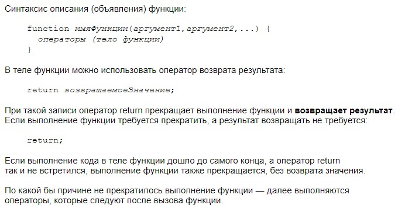
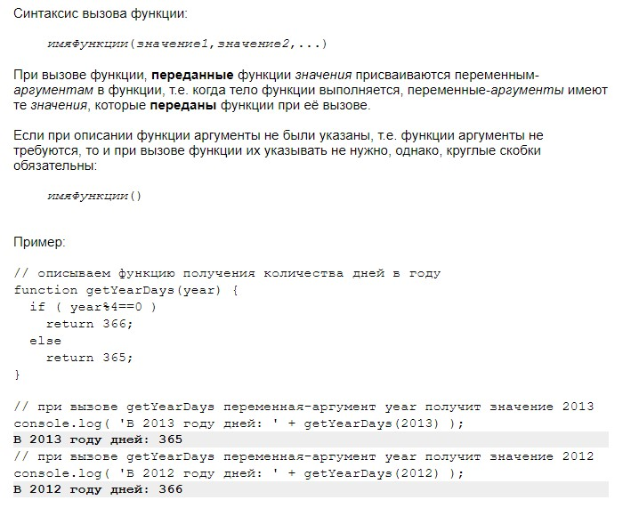
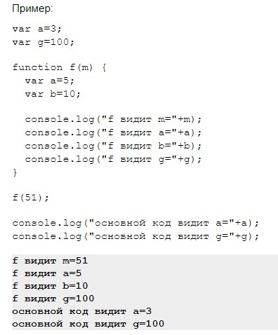
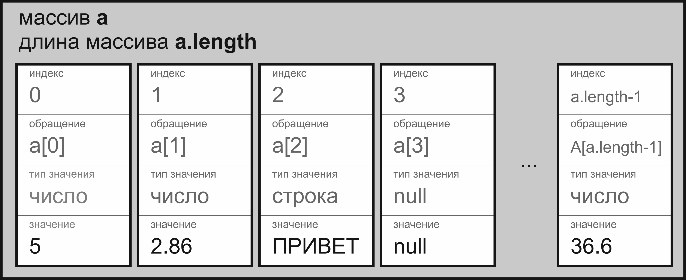
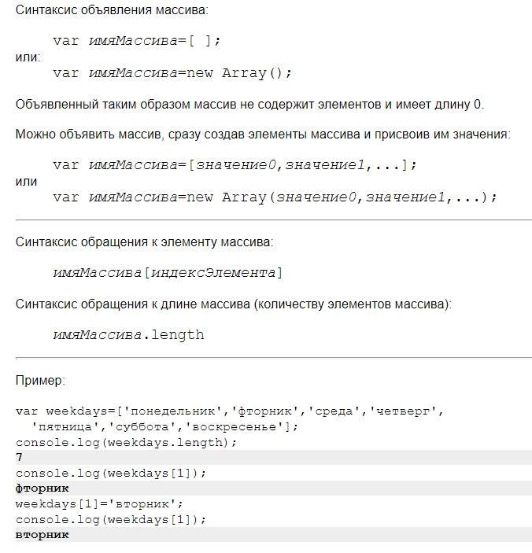
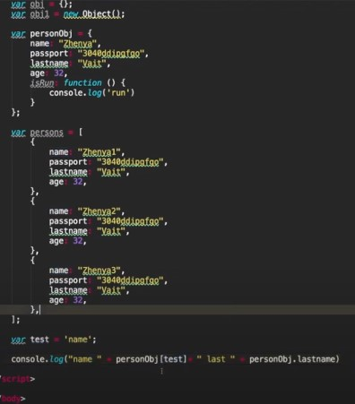
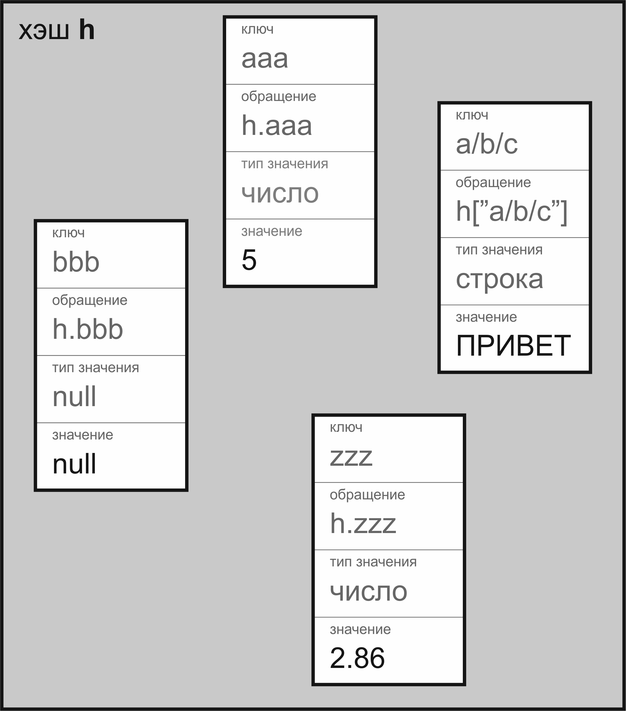
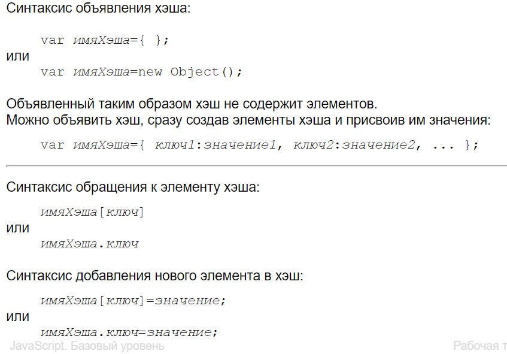
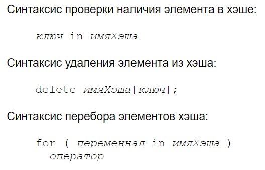
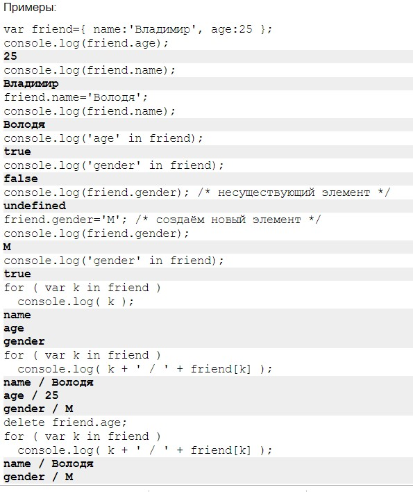

Для начала попробуем сделать самую простую функцию.
Для этого напишем слово function, название ее calcы
В круглых скобках мы можем записывать разные аргументы, например сделаем сложение. Для этого нам нужно знать
два слагаемых x и y. также должны понимать, что мы с ними хотим сделать, прибавить, отнять и т.д.
Пишем в скобках x, y и oper - это операция. Их мы можем записывать какие хотим, но в теле цикла они будут работать как переменные
Удобнее всего использовать swith case и там все эти операции описвать
Пишем, случай + - тогда будет то-то.. и т.д. описываем все случаи (case)
До этого момента это просто описанный тертёж, для того, чтобы эта функция работала, ее нужно вызвать, можемэ то делать ниже или выше
Таким образом вызываем ее: calc(5,10,"+");
Есть такая штука как debugger. Она помогает посмотреть, как последовательно работает консоль. Оч удобная
Записывается внутри функции после скобки {}
Если нам необходимо две эти функции между собой сложить, то необходимо будет задать переменные и в них уже вложить нашу функцию calc
В этом случае, мы прописываем вместо console.log - return, чтобы наше значение вернуло в переменную и тогда break можно не прописывать
Теперь немного теории
Функция — код (множество операторов), выполнение которого, возможно, потребуется повторять в различных местах страницы.
То есть, описав (объявив) функцию один раз, мы можем её вызывать из различных мест кода, и каждый раз будут выполняться операторы, составляющие тело функции.
После того как вызванная функция выполнилась (отработала), выполнение возвращается в точку, откуда она была вызвана, и далее выполняются операторы, следующие за вызовом функции.
Функция может получать аргументы — переменные, которые видны только в теле функции и которые получают конкретные значения при вызове функции.
Функция может и не получать аргументов.
Функция может возвращать результат — значение любого типа, представляющее результат её работы. В качестве результата функция может возвращать только одно значение, либо не возвращать никакого значения.
Как назвать функцию, должна ли она получать аргументы, какие и в каком порядке, будет ли она возвращать результат и какой — решает разработчик.
Функции, во-первых, важны для повторного использования кода, то есть, единожды написав и отладив некий осмысленный (полезный) код, мы (или другой разработчик) можем этим кодом в дальнейшем пользоваться многократно, в этом или в других проектах.
Во-вторых, функции позволяют делать код компактнее и яснее.
 Примеры
Переменные-аргументы функции, а также любые переменные, описанные в теле функции обычным образом (например, var имяПеременной=значение), видны (доступны для обращения) только в теле этой функции, обращаться к ним из основной части кода или из тела других функций не получится (кроме особого случая — вложенные описания функции). Т.е. у них локальная область видимости.
Переменные, описанные обычным образом (например, var имяПеременной=значение) в основной части кода (т.е. в теге script, не в теле функции), доступны откуда угодно, т.е. у них глобальная область видимости.
У переменных, описанных без ключевого слова var (например, имяПеременной=значение;) всегда глобальная область видимости, где бы они ни были описаны.
Сначала консоль ищет переменные в локальной зоне, а потом уже выходит за ее границы(функции) и ищет в глобальной
Т.е. локальная зона - это то, что в скобках функции
Если и в глобальной зоне не находит - пишет в консоле, чо такую переменную не найдено
Массив — упорядоченное множество переменных, каждая из которых не имеет собственного имени, а имеет индекс — номер переменной внутри массива. Индексы переменных нумеруются с 0.
Переменные внутри массива называются элементами массива.
Поскольку элементы массива собственного имени не имеют, обращаться к ним нужно, указывая имя массива и индекс переменной внутри массива.
 Массив будет создаваться также, как и просто переменные, но прописывается через квадратные скобки
Есть два вида записи массива.
Указываем в квадратных скобках значеняи массива через запятую, 1,2 и т.д
ПИШЕМ new Array и в круглых скобках опять указываем значения через запятую
Особенность массивов в том, что любой счет начинается с нуля
Чтобы вызвать массим, можем также это сделать через console
Если нужно вызвать конкретный элемент из массива, то в квадратных скобках указываем его номер
Чтобы изменить какой-то элемент массива, можно тоже задать их как переменную через квадратные скобки
Но консоль должен прописать ниже значения, которое мы изменили
Можно задать длину массива через функцию for
Многие гооврят не хэши, а объекты
Предположим, что мы сделали какой-то массив, в котором задаются значения каждому человеку.
Если придет кто-то и скажет добавить еще между этими значения еще одно, как в примере - паспортные данные, то у нас уже консоль будет выводить неверно
Объекты помогают с этим бороться
Создается через фигурные скобки {} или чрез new object
В объектах мы уже присваиваем каждому значению свой ключ через запятую и через двоеточиеи в консоле указываем ключ, на который мы ссылаемся
В объекте можно сделать массив, в котором будут все эти люди перечислены
Есть два понятия - геттер (брать) и сеттер (устанавливать)
В примерах вышше, геттер - это personobj.name, т.к. мы тут значение получили.
Сеттер - когда значение устанавливаем. например personobj.name = значение какое-то
Также можно проверить, если ли у нас каок-ето значение в объекте через in в консоле
Чтобы добавить элемент - personobj.gender = 'M';
Чтобы удалить элемент - delete personobj['Isrun'];
Через цикл for можем задать значение key в нашем объекте и узнать, какие у нас есть ключи, вывести их в консоле
Теория
Хэш — неупорядоченное множество переменных, каждая из которых не имеет собственного имени, а имеет ключ — значение строкового или числового типа, с помощью которого можно получить доступ к переменной.
Переменные внутри хэша называются элементами хэша.
Поскольку элементы хэша собственного имени не имеют, обращаться к ним нужно, указывая имя хэша и ключ внутри хэша.
   Для подключения на HTML-страницу JavaScript-кода, который вынесен в отдельный js-файл, можно применять парный тег script:
script type='text/javascript' src='filename.js' /script
или
script src='filename.js' /script
В теге script, который подключает внешний JavaScript-файл (т.е. в теге script с атрибутом src), не допускается написание кода между открывающим и закрывающим тегами script.
Для написания кода требуется использовать ещё один тег script, в котором атрибута src нет.
Код, вынесенный во внешний js-файл, при подключении файла тегом script будет загружен и выполнен, и только потом продолжится отображение HTML-кода, расположенного после тега script.
встроенный в страницу скрипт - http://fe.it-academy.by/Examples/script1.html
скрипт во внешнем файле - http://fe.it-academy.by/Examples/script2.html